phone-harness는 무엇이고 어떻게 폰을 쓰나요
phone-harness는 Claude Code 같은 코딩 에이전트가 진짜 스마트폰을 사람처럼 눌러 쓰게 해 주는 오픈소스예요. 스킬로 설치하면 Claude Code가 내 폰에서 앱을 열고, 누르고, 글자를 쳐요. 발표 직후 Hermes 에이전트에도 플러그인으로 들어갔어요.
화제가 된 건 X에 올라온 소개 글 덕분이에요. 아래 화면은 창업자 shawn의 글이에요. 'Phone Harness 소개 (YC F26)'라는 줄 아래로 실제 앱 테스트, 메시지 보내기와 전화 걸기, 2FA 인증 코드 가져오기 같은 쓰임새가 적혀 있어요. 발표자는 말로 '지난주 YC 팀으로 공식 런칭'이라고 했는데, 아래쪽 노란 정정 자막이 날짜를 바로잡아요.
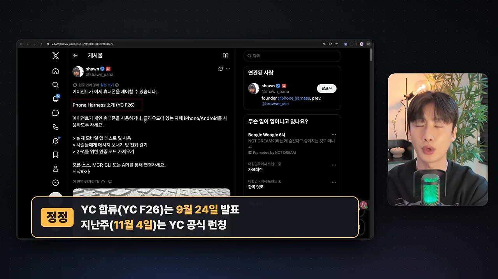
미러링 화면을 읽고, 판단하고, 누르는 고리
아이폰과 안드로이드를 둘 다 지원해요. 아이폰 탈옥도, 별도 API도 필요 없어요. 아이폰은 Mac에서 아이폰 미러링을 켜 두기만 하면 돼요. 애플의 Vision OCR로 화면 글자를 읽고, 사람처럼 탭·스와이프·타이핑을 보내요.
슬라이드 왼쪽이 Mac 화면 속 내 아이폰이고, 오른쪽 원이 동작 순서예요. 1 화면 찍기 → 2 글자 읽기(OCR) → 3 판단 → 4 탭·스와이프·타이핑을 돌고, 가운데 '다시 읽어 확인'으로 결과를 살펴요. 맨 아래 초록 표시는 안드로이드 쪽 방식이에요. 안드로이드는 ADB(Android Debug Bridge)로 스크린샷을 찍고 접근성 트리까지 읽어요.
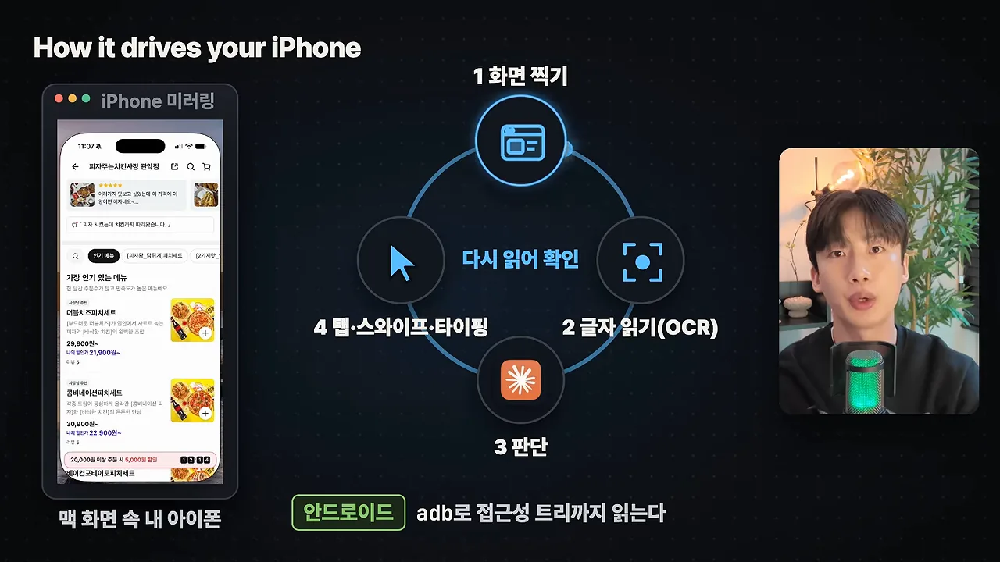
안에서 쓰는 함수도 단순해요. README의 Usage 예시는 메모 앱을 열고(open_app), 'New Note'를 누르고(tap_text), 글자를 친 뒤(type_text), 화면에서 읽은 글자 10개를 출력(screen)해요. 사람이 폰을 쓰는 동작을 함수 몇 개로 옮겨 놓았기 때문에 에이전트가 사람 대신 폰을 쓸 수 있는 거예요.
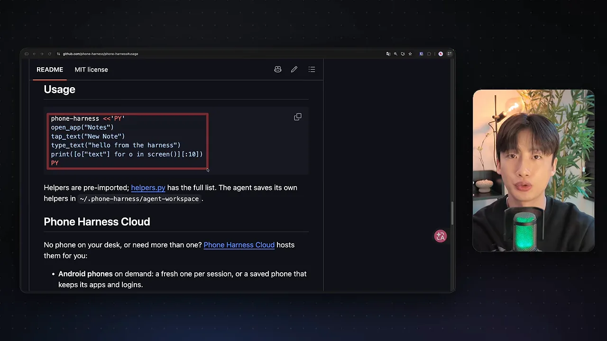
먼저 알아 둘 한계
실습에 앞서 발표자는 README의 제한 항목에서 두 줄을 짚어요. 화면에서 빨간 테두리가 쳐진 '멀티터치'와 '카메라 또는 얼굴 인식 기능'이 동작하지 않는다는 줄이에요. 바로 위 줄은 OCR이 아이콘이 아니라 텍스트를 읽는다는 내용이에요. 글자 없는 아이콘을 잘 못 읽는다는 뜻이고, 뒤에서 실제로 부딪혀요.
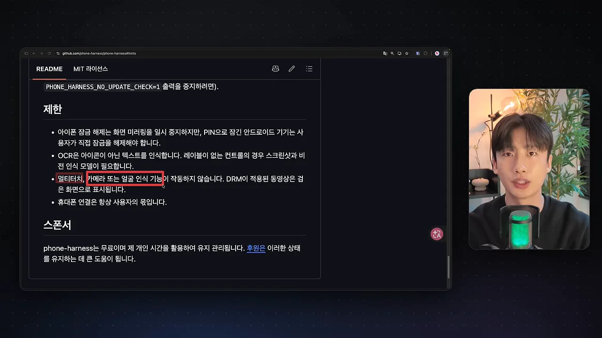
설치와 사용 통계 끄기
연결은 프롬프트 하나로 끝나요. phone-harness.com 첫 화면의 빨간 테두리 버튼 'Prompt for LLMs'를 누르면 설치 프롬프트가 복사돼요.
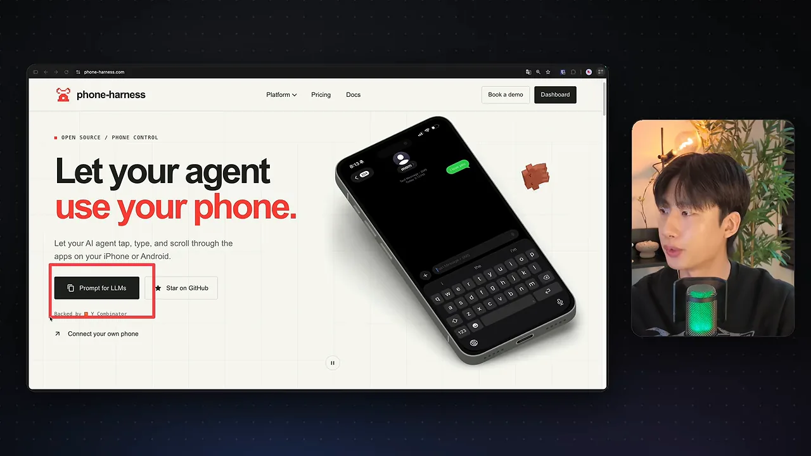
- 복사한 프롬프트를 Claude Code에 붙여 넣어요 — Claude Code가 phone-harness를 설치하고 어느 폰을 쓸지 물어요.
- 아이폰이면 Mac에서 아이폰 미러링 앱을 열어요 — 안드로이드라면 ADB를 써요.
- Claude Code에 '아이폰 미러링 완료되었어'라고 알려 줘요 권한 요청이 뜨면 허용해요
- 연결을 확인해요 Vision OCR 스크린샷으로 홈 화면을 찍고 앱 이름을 읽어 보여 줘요
아래는 3단계 직후 화면이에요. 오른쪽 터미널에서 Claude Code가 남은 할 일을 세 줄로 안내했고, 그 아래 발표자가 '아이폰 미러링 완료되었어'라고 답했어요. 안내문에는 PIN(Personal Identification Number)은 직접 입력하지 않고 계정 가입이나 클라우드 크레딧도 승인 없이 쓰지 않는다는 약속도 적혀 있어요. 왼쪽에는 미러링으로 띄운 아이폰 홈 화면이 보여요.
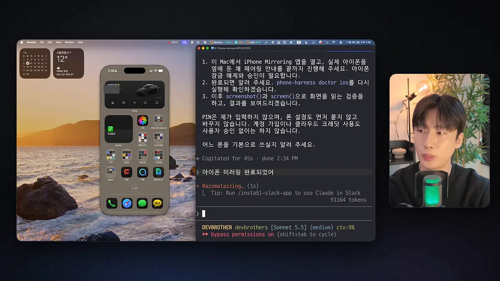
설치 후 꼭 할 일: 사용 통계 끄기
텔레메트리는 기본으로 켜져 있어요. 슬라이드 왼쪽 '내 맥'에서 오른쪽 'Phone Harness 분석 서버'로 두 가지가 건너가요. 실행한 스크립트(최대 2만 자)와 읽은 텍스트 출력 끝부분(최대 2만 자)이에요. 폰 화면에서 읽은 글자가 밖으로 나갈 수 있다는 뜻이에요.
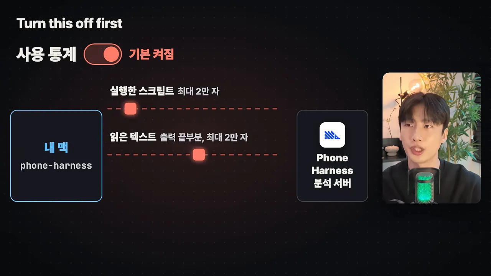
끄는 명령은 한 줄이에요. 끄고 나면 슬라이드의 스위치가 초록 '꺼짐'으로 바뀌고 서버로 가는 선이 끊겨요.
phone-harness config set telemetry false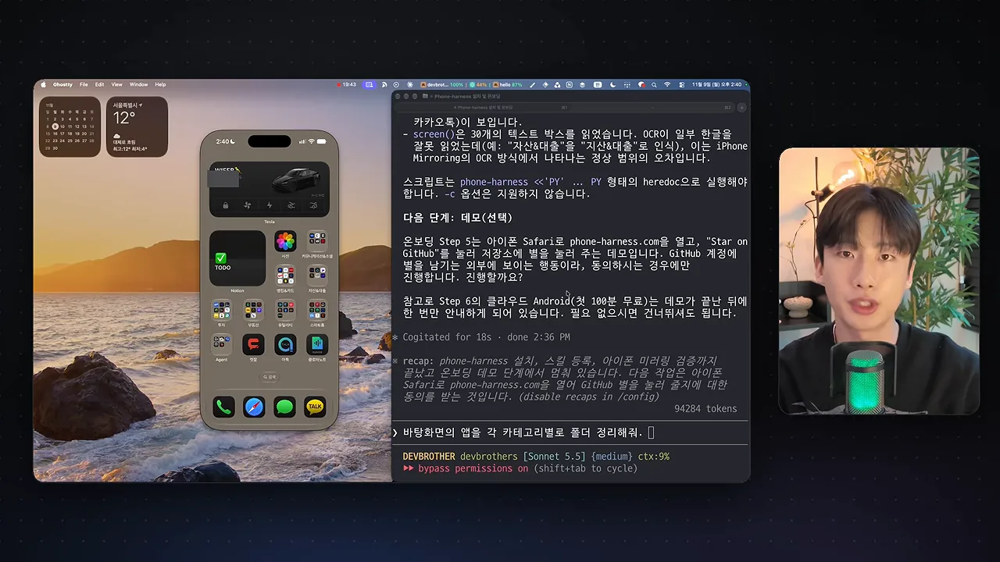
홈 화면 정리 실습과 OCR의 한계
첫 실습은 정리 안 된 홈 화면 앱을 카테고리별 폴더로 정리하는 일이에요. 모델은 Sonnet 5.5를 썼어요. 에이전트는 먼저 홈 화면을 끌어 넘기며 어떤 앱이 있는지 훑고, 기존 폴더에 넣을 앱을 표로 정리해서 물어봐요.
오른쪽 표를 보면 '뱅킹&카드'에 신한은행 기업·지갑·PayPal·Wise, '행정 업무'에 스마트위택스·Acrobat 같은 식으로 나눴어요. 그런데 '쇼핑' 줄에 '풀 비셋'이 있어요. 원래는 폴바셋 앱이에요. OCR이 한글을 잘못 읽은 첫 사례예요.
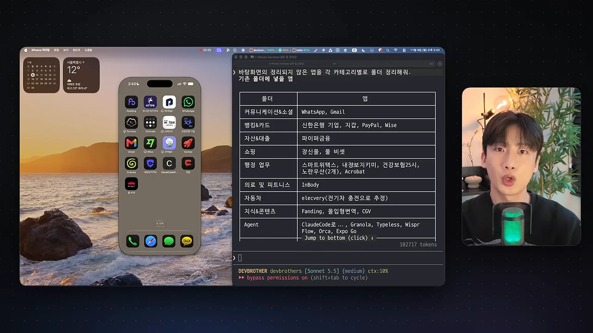
사람처럼 조작하니 사람처럼 실수해요
발표자가 '이 분류대로 진행해'라고 하자 에이전트가 정리를 시작해요. iOS 내부 API를 부르지 않고, 사람처럼 앱을 길게 눌러 홈 화면 편집 모드로 들어간 뒤 끌어다 놓아요. 그래서 가끔 손이 미끄러져요.
아래 화면에서 빨간 테두리가 쳐진 첫 줄이 '중간에 문제가 생겨서 멈췄습니다'예요. 그 아래 '무엇이 잘못됐나'를 보면 페이지를 넘기려던 swipe가 위젯 위에서 시작돼 편집 모드로 들어갔고, 다음 스와이프가 드래그로 처리돼 노란 팁 위젯이 첫 페이지로 옮겨졌어요. 에이전트는 이걸 스스로 알아채고 되돌릴지 물어요.
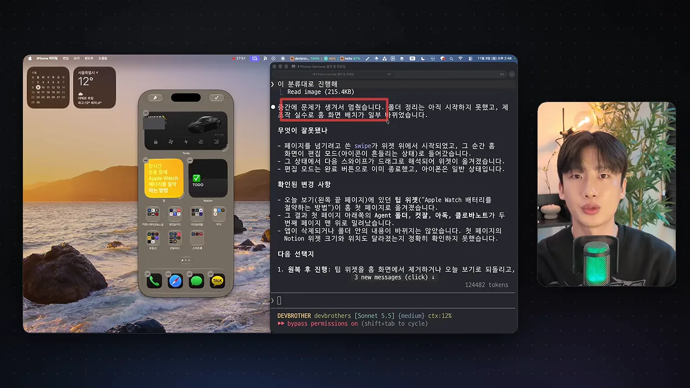
이후 에이전트 관련 앱과 Paseo 앱은 Agent 폴더로, Adobe 앱은 행정 업무 폴더로 하나씩 옮겨졌어요. 결과는 아래 화면처럼 홈 화면 2페이지, 폴더 15개예요.
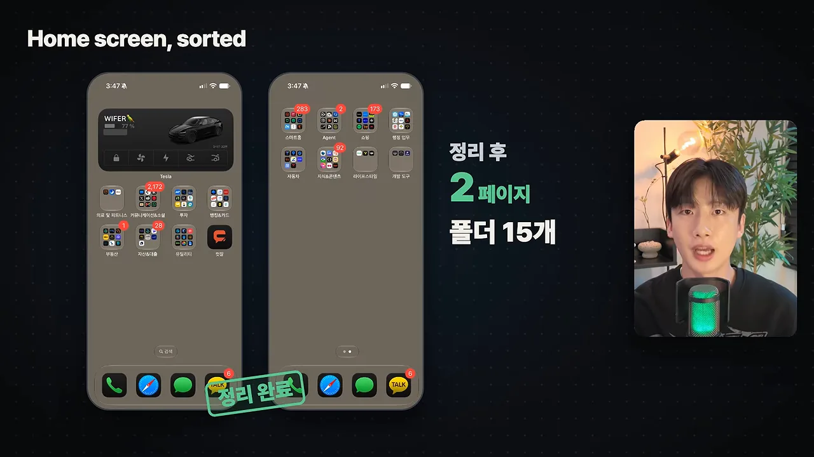
발표자는 PC(Personal Computer) 안의 작업은 Claude Code나 Codex가 이미 거의 완벽하게 한다고 봐요. 반면 스마트폰을 다룰 괜찮은 도구는 그동안 없었고, phone-harness는 사람이 폰을 쓰는 동작을 그대로 쓰기 때문에 직관적이라고 평가해요.
AI가 받는 건 글자뿐이에요
한글 오인식은 아이폰 미러링의 구조에서 나와요. 미러링은 결국 화면을 영상으로 넘겨줄 뿐이라, Claude Code가 접근성 트리 같은 화면 구조를 읽을 수 없어요. OCR로 글자만 뽑아야 해요.
슬라이드 왼쪽이 실제 화면, 가운데가 AI(Artificial Intelligence)가 받는 글자예요. 아이콘과 그림은 사라지고 글자 조각만 흩어져 남아요. 오른쪽에는 오인식 예가 붉게 적혀 있어요. 투자 → 두자, 컷잘 → 컷질, 아톡 → 아독이에요. 맨 아래 줄은 글자 없는 버튼은 못 본다는 뜻이에요.
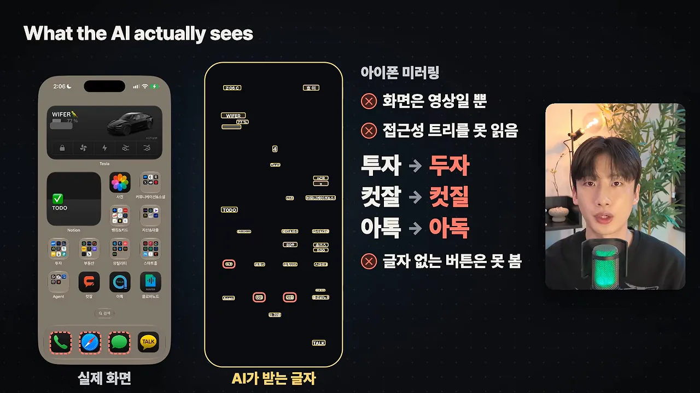
안드로이드는 사정이 달라요. 같은 슬라이드의 오른쪽이 안드로이드 adb로 바뀌면서 두 항목에 초록 체크가 붙어요. 접근성 트리를 직접 읽고, 어느 글자·버튼인지 정확히 알아요. 그래서 '더 안정적'이라는 도장이 찍혀요.
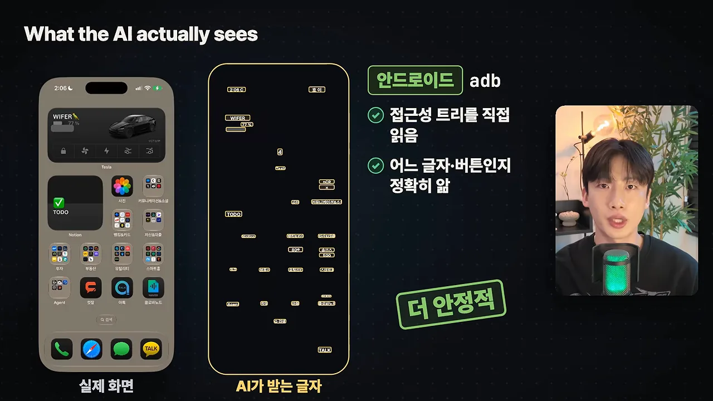
Haiku, Sonnet, Opus 중 누구에게 맡길까요
어떤 모델에 맡기는 게 가장 나은지 보려고 발표자는 같은 출발 상태에서 두 가지 심부름을 시켰어요. 슬라이드 위 칸이 배달의민족 심부름이고, 아래 칸이 스타벅스 심부름이에요. 결과는 치킨집 심부름 기준으로만 공개했어요.
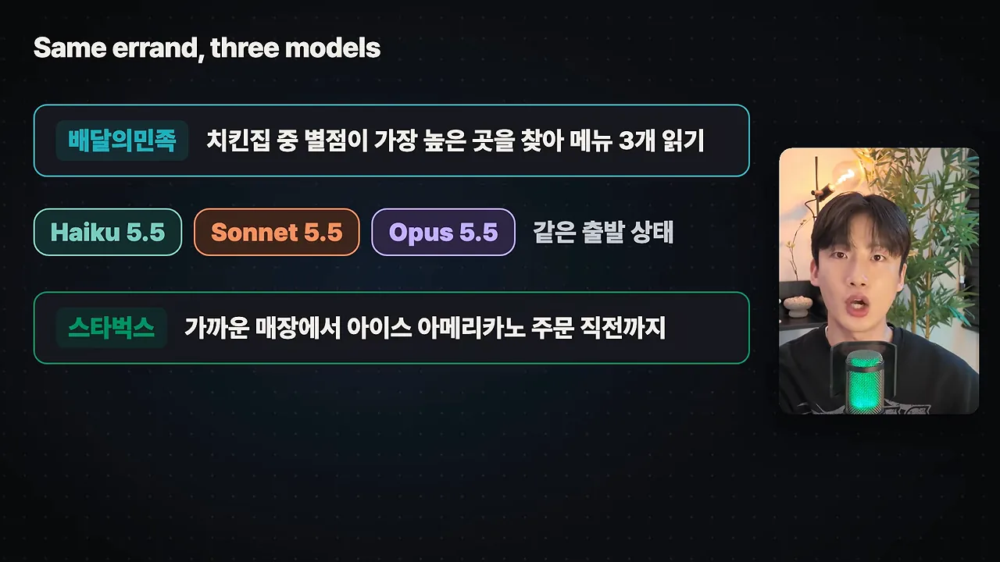
가장 빠를 줄 알았던 Haiku가 가장 느렸어요
발표자는 Haiku가 가장 빠를 거라 예상했지만 결과는 반대였어요. Haiku는 같은 시도를 계속 되풀이했고, 도구 호출이 Sonnet의 두 배를 넘었어요. 아래 그림은 영상이 밝힌 시간과 도구 호출 수를 같은 눈금으로 그린 거예요.
OCR이 틀린 이름을 누가 바로잡았나
한글 오인식은 여기서도 나왔어요. 화면에 적힌 가게 이름은 '피자주는치킨사장 관악점'이에요. OCR은 이걸 '치킨사랑'으로 읽었어요. 아래 화면처럼 Haiku는 잘못 읽은 그대로 보고했고, Sonnet과 Opus는 모델의 비전으로 화면을 다시 보고 '치킨사장'으로 바로잡았어요.
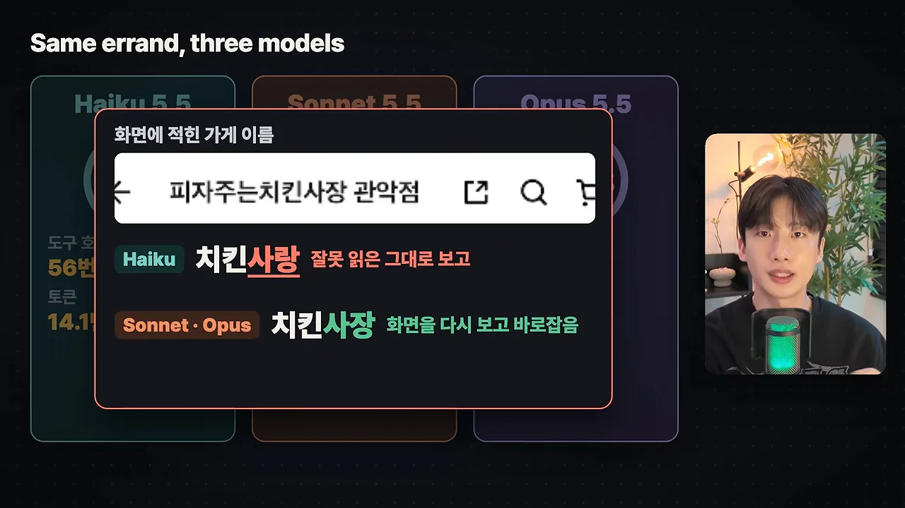
비용까지 따져 보면
마지막 슬라이드는 세 모델의 숫자를 한 장에 모아요. 카드마다 시간, 도구 호출, 토큰, 결과, 100만 토큰 단가(입력/출력)가 차례로 적혀 있고, Sonnet 카드 아래에 '폰 심부름은 Sonnet' 도장이, Opus 아래에 '단가 2배, 더 느림'이 붙어 있어요.
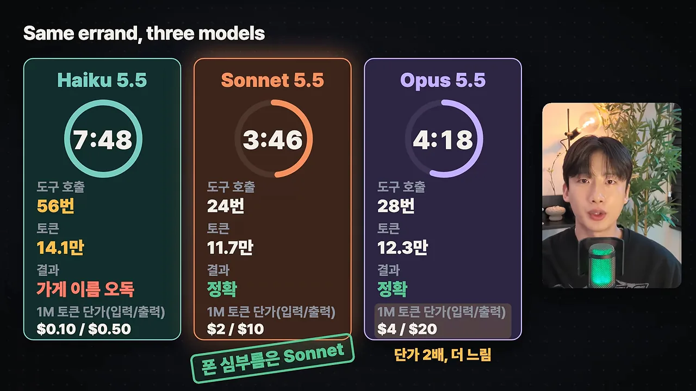
| Haiku 5.5 | Sonnet 5.5 | Opus 5.5 | |
|---|---|---|---|
| 걸린 시간 | 7분 48초 | 3분 46초 | 4분 18초 |
| 도구 호출 | 56번 | 24번 | 28번 |
| 토큰 | 14.1만 | 11.7만 | 12.3만 |
| 결과 | 가게 이름 오독 | 정확 | 정확 |
| 100만 토큰 단가(입력/출력) | $0.10 / $0.50 | $2 / $10 | $4 / $20 |
발표자의 판단은 이래요.
- Haiku — 토큰은 가장 많이 썼지만 단가가 Sonnet의 20분의 1이라 API 비용은 가장 쌌어요. 그래도 시간이 두 배 걸리고, 틀린 결과를 다시 확인하는 품까지 치면 맡기지 않겠대요.
- Opus — 결과는 Sonnet과 비슷한데 단가는 두 배고 시간도 더 걸려서 효율적이지 않았어요.
- Sonnet — 추천 모델이에요.
보안, 클라우드 폰, 쓸 곳
phone-harness를 달면 Claude Code가 내 아이폰 화면을 전부 그대로 읽을 수 있어요. 슬라이드의 눈 모양 네 칸이 그 범위예요. 카카오톡 메시지, 문자 메시지, 결제 정보, 사진이에요. 아래 붉은 줄은 통째로 맡기면 보안에 취약하다는 경고예요.
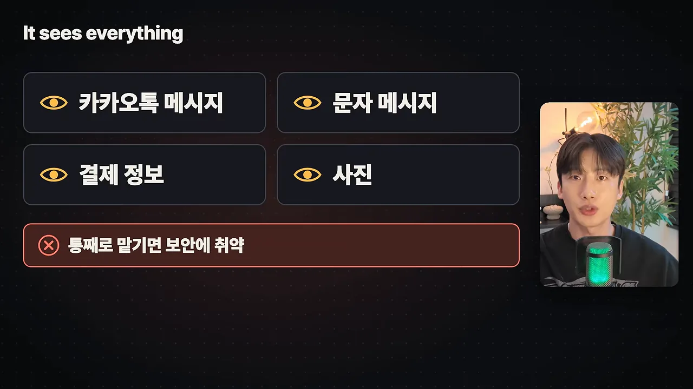
그래서 발표자는 메인 아이폰을 그대로 연결하기보다 둘 중 하나를 고르자고 해요. 따로 쓰는 공기계, 또는 클라우드 폰이에요.
에이전트용 클라우드 폰
phone-harness도 에이전트용 클라우드 폰을 오픈 베타로 내놨어요. 아래 소개 화면 아래쪽 다섯 칸이 특징이에요. 발표자가 짚은 순서대로 보면 이래요.
- Stealth: 실제 하드웨어로 돌아서 앱이 사람이 쓰는 폰으로 봐요.
- Real phone numbers: 폰마다 번호가 하나씩 나와요.
- Persistent state: 로그인 세션이 계속 유지돼요.
- Unlimited devices: 클라우드라 원하는 만큼 늘릴 수 있어요.
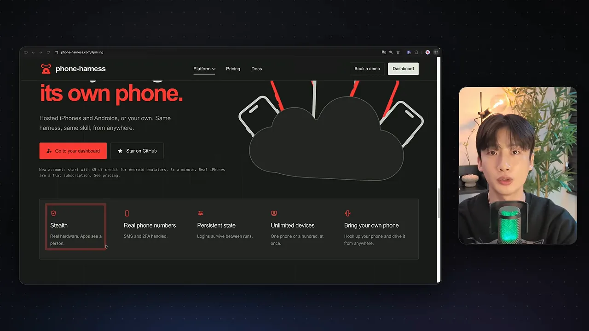
앱 테스트 도구와 무엇이 다른가요
모바일 앱을 만드는 사람에게는 이미 E2E(End-to-End) 테스트 도구가 있어요. 슬라이드 왼쪽 칸의 XCUITest, Espresso, Maestro예요. 이런 도구는 내 앱이 빌드돼 있다는 전제로 시뮬레이터에서 돌리는 게 보통이에요. 오른쪽 phone-harness는 실제 쓰는 폰을 그대로 다뤄요. 그래서 시뮬레이터로는 안 되던 부분까지 건드릴 수 있어요.
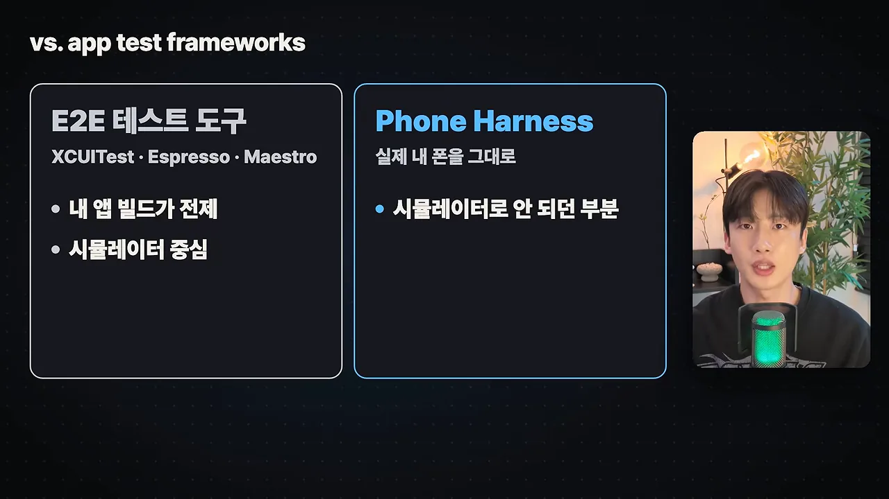
API가 없는 앱에 쓸 곳
스마트폰 안에는 API가 없는 앱이 많아서 자동화를 포기한 경우가 많았어요. 발표자가 든 예가 슬라이드의 네 칸이에요.
- 사내 앱: 그룹웨어 공지와 결재 현황 확인
- 예약 앱: 빈자리 계속 확인
- 사진첩: 특정 스크린샷 찾기
- 메모: 메모 정리
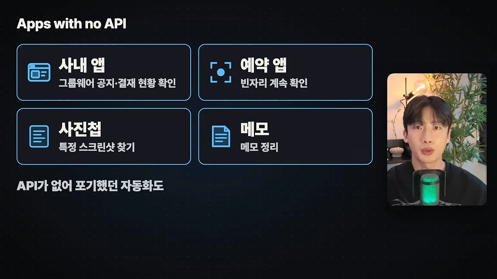
내 하네스에 폰을 붙이기
마지막 슬라이드는 코딩 에이전트가 다룰 수 있는 범위를 보여 줘요. 초록 칸 '로컬 PC'에는 터미널, 브라우저, 데스크톱 앱이 이미 체크돼 있고, 그 옆에 파란 '스마트폰' 칸이 새로 붙어요. 발표자는 에이전트에게 폰 일을 어디까지 맡길지 먼저 정하고, 내 하네스에 phone-harness를 붙이는 걸 검토해 보라고 권해요.
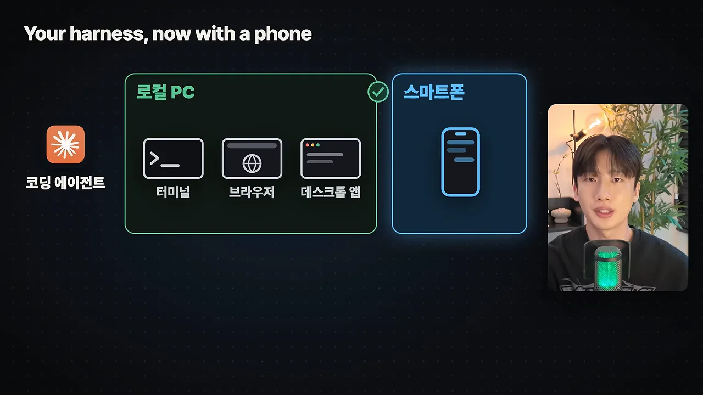